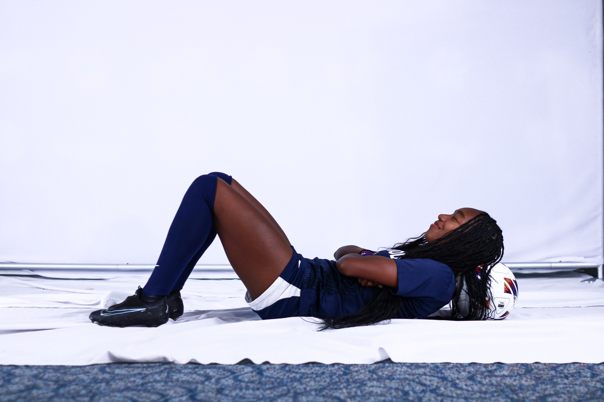
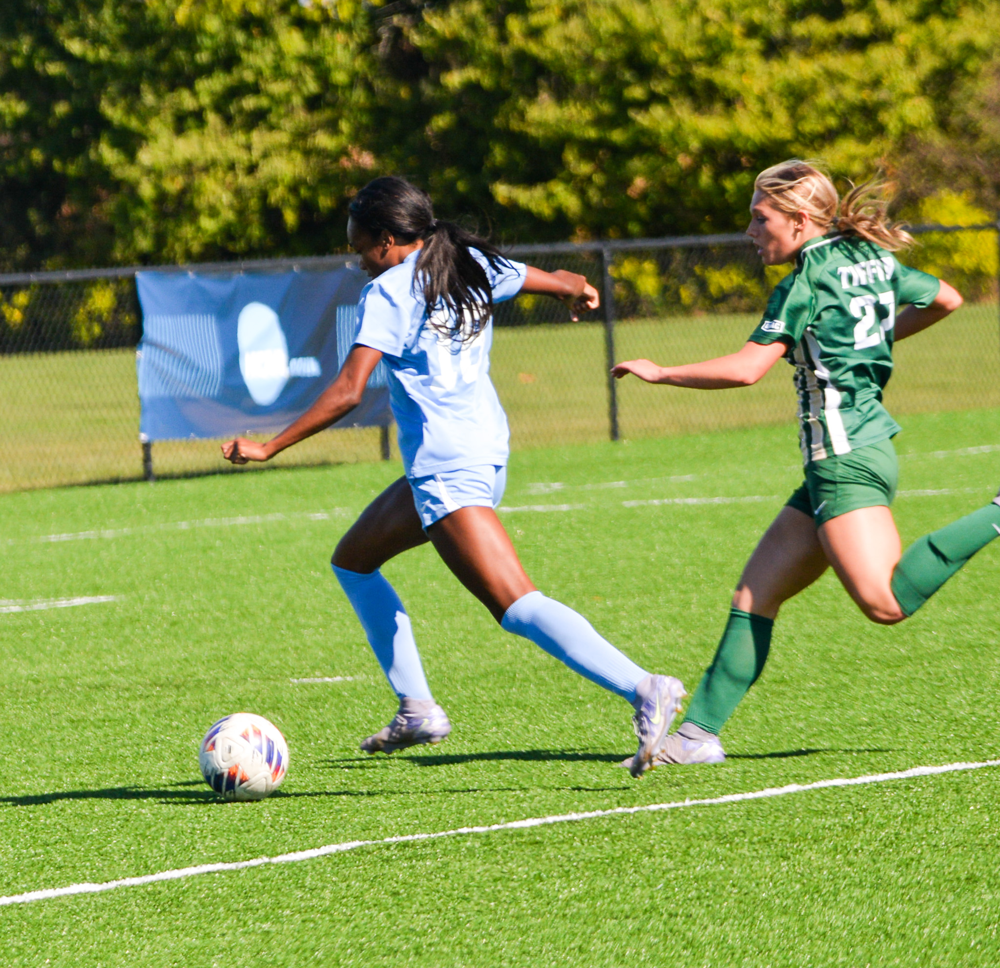
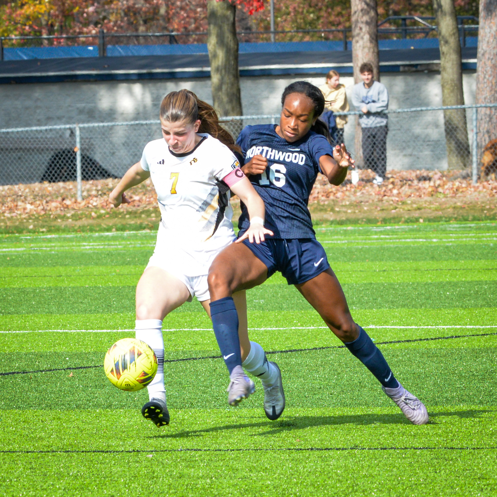
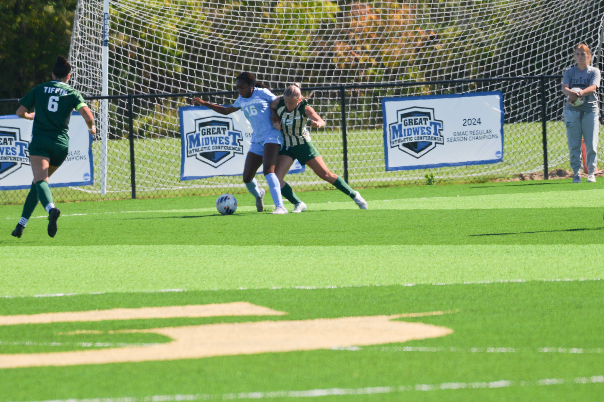
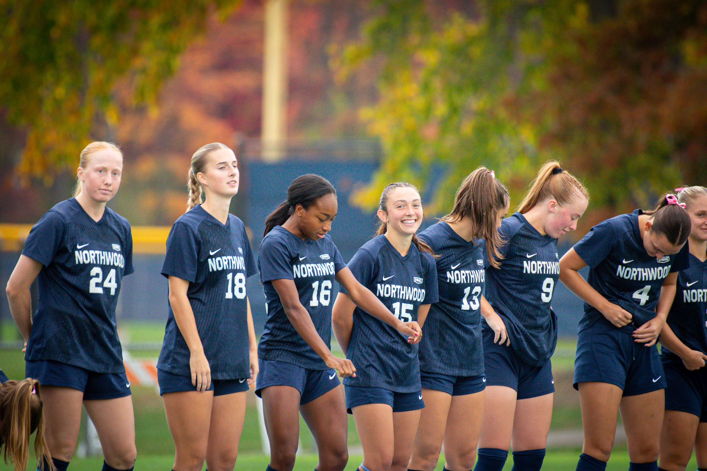

Player Identity
Mari Jackson | #16
Northwood University attacker with playing history at Corktown WFC and Michigan Burn.

Northwood University | MJ16
Forward and attacking midfielder from Eastpointe, Michigan, studying Healthcare Management in the Northwood University Class of 2027.
Mari Jackson began playing soccer at age six, developing her passion through training, competition, and a commitment to continuous improvement. Her journey has been shaped by family support and coaches who challenged her to grow as both a player and person.
A dynamic forward and attacking midfielder, Mari is known for pace, technical ability, intelligent movement, and composure in front of goal. She is motivated by becoming the best version of herself on and off the field.
Player Identity
Northwood University attacker with playing history at Corktown WFC and Michigan Burn.
Position
Forward / Attacking MidfielderPreferred Foot
Right | Strong with BothEducation
Northwood University | Healthcare ManagementLocation
Eastpointe, MichiganVerified season-by-season statistics from Mari Jackson's official Northwood University player profile.
| Season | GP | GS | G | A | PTS | SH | SH% | SOG | SOG% | PK | GW |
|---|---|---|---|---|---|---|---|---|---|---|---|
| 2023-24 | 22 | 4 | 2 | 0 | 4 | 25 | .080 | 13 | .520 | 0-0 | 2 |
| 2024-25 | 21 | 5 | 4 | 1 | 9 | 21 | .190 | 11 | .524 | 0-0 | 1 |
| 2025-26 | 20 | 17 | 6 | 0 | 12 | 43 | .140 | 17 | .395 | 1-1 | 5 |
| Career | 63 | 26 | 12 | 1 | 25 | 89 | .135 | 41 | .461 | 1-1 | 8 |
Source: Northwood University Athletics official player profile.
Official MJ16 highlight video.
Selected action and team photos from the MJ16 portfolio.




Download Mari Jackson's MJ16 resume with player profile, education, playing history, statistics, and honors.
For recruiting, club opportunities, interview requests, or media inquiries, email mj16soccer@gmail.com or use the form below.